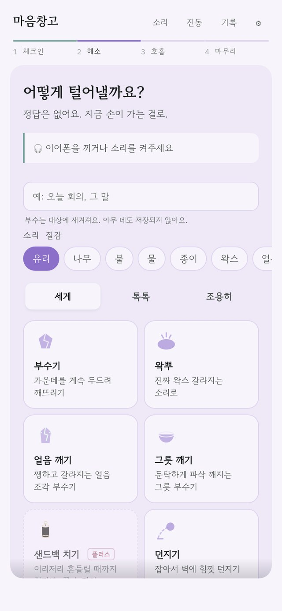
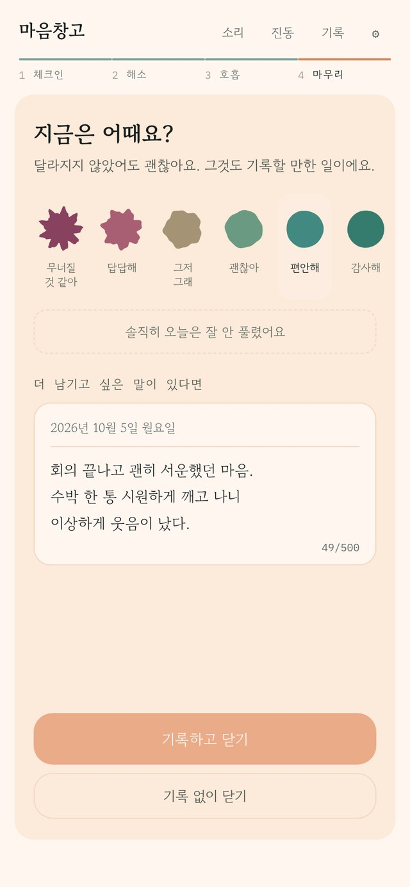
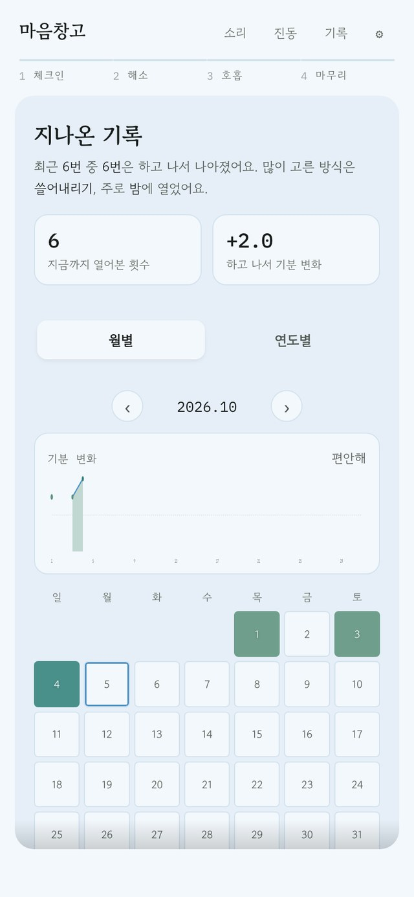
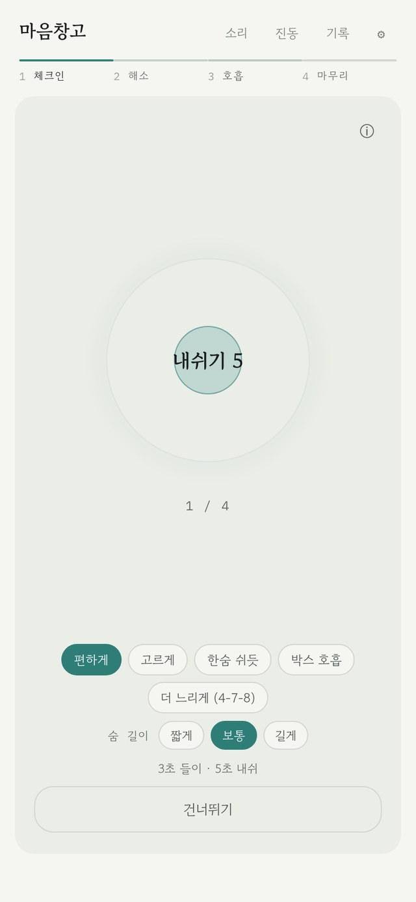
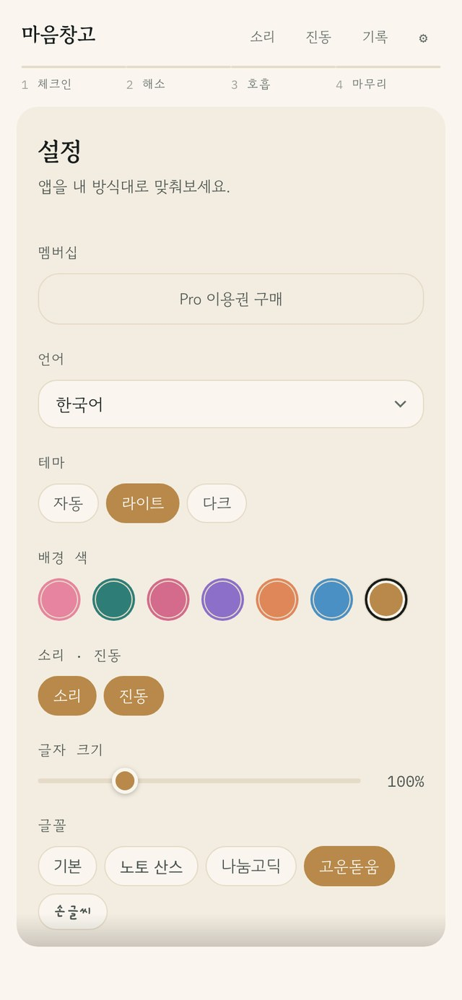

말하기엔 사소하고, 삼키기엔 무거운 하루. 손끝으로 부수고 터뜨려 털어낸 다음, 나만 보는 일기장에 오늘을 살짝 적어두세요.
무료로 시작해요 · 회원가입 없음
그럴 땐 참지 말고, 툭 털어내요.
길게 쓰지 않아도, 매일 오지 않아도 괜찮아요.
마음에 가까운 얼굴 하나만 톡. 이유를 고르면 거기에 맞는 방식을 먼저 골라줘요.
세게 부수거나, 톡톡 터뜨리거나, 조용히 태우거나. 소리까지 진짜 같은 25가지 방식.
원을 따라 숨을 고르고, 달라진 기분과 오늘의 한 줄을 남겨요.
털어내고 난 뒤의 마음은 생각보다 솔직해요. 그 순간을 일기처럼 남겨두면, 어느 날 돌아봤을 때 내가 나를 조금 더 알게 돼요.
세이지, 로즈, 라벤더, 피치, 하늘, 크림. 다크 모드도 있어요.
일기 쓰는 맛이 나도록 좋아하는 글씨체로 골라요.
원할 때만 켜요. 억지로 오라고 조르지 않아요.
체크인 화면에서 살짝 열어보는 오늘의 한 마디.
홈 화면에서 한 번 누르면 바로 숨 고르기로.
유리, 얼음, 왁스, 낙엽… 내 사진을 걸고 산산조각 낼 수도 있어요.
벚꽃 · 라벤더 · 피치 · 하늘 · 세이지 · 크림. 전부 실제 앱 화면이에요.




